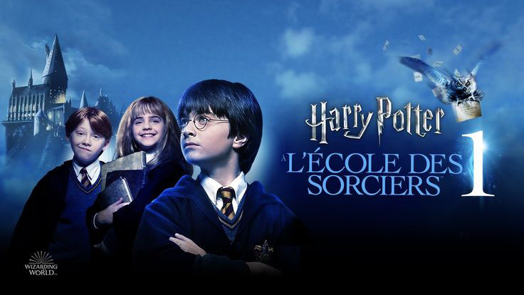
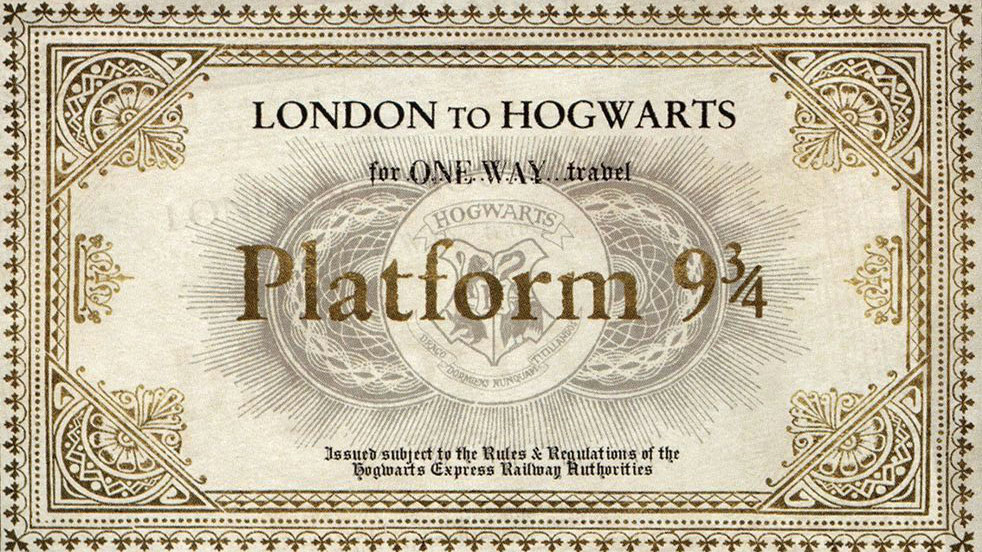
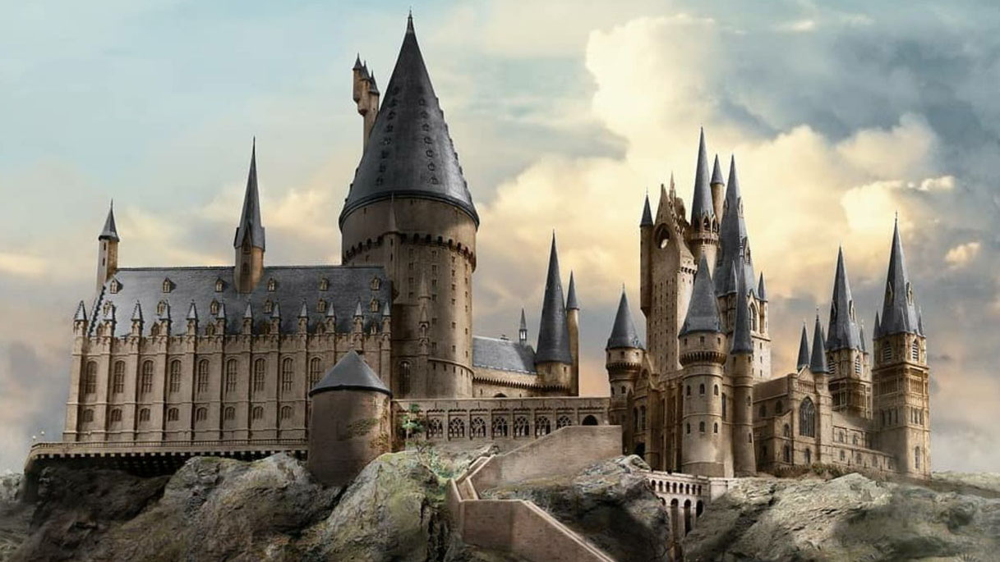
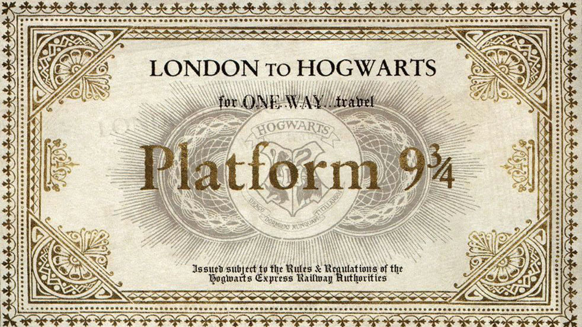
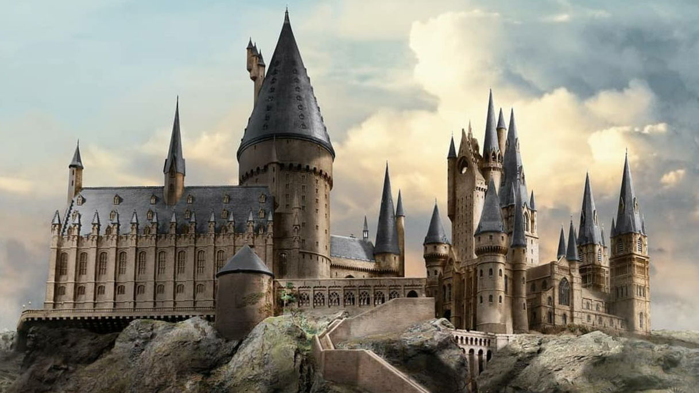

ハリーポッターと賢者の石
両親を亡くし孤独に育った少年ハリー・ポッターのもとに届いた一通の手紙。 自分が魔法使いであることを知り、ホグワーツ魔法魔術学校へ入学する。 仲間と出会い、禁断の“賢者の石”を巡る冒険が幕を開ける。
 



ハリーポッターと賢者の石
両親を亡くし孤独に育った少年ハリー・ポッターのもとに届いた一通の手紙。 自分が魔法使いであることを知り、ホグワーツ魔法魔術学校へ入学する。 仲間と出会い、禁断の“賢者の石”を巡る冒険が幕を開ける。
ハリーポッターと秘密の部屋
2年目のホグワーツで生徒が石にされる怪事件が発生。 ハリーは「秘密の部屋」の伝説と謎の声に導かれ、事件の核心へと迫る。 やがて明かされる“トム・リドル”の正体とは──？
ハリーポッターとアズカバンの囚人
恐ろしい囚人シリウス・ブラックが脱獄し、ハリーの命を狙っているという。 ディメンターたちが学校を取り囲む中、ハリーは家族の過去と向き合うことに。 真実を知ったとき、友情と信頼の形が変わっていく。
ハリーポッターと炎のゴブレット
>魔法界の大イベント“三大魔法学校対抗試合”にハリーがまさかの出場。 命がけの課題と謎が待ち受ける中、ヴォルデモートの復活が現実に。 楽しかった日々が一変し、物語は闇の時代へと向かう。
ハリーポッターと不死鳥の騎士団
ヴォルデモートの復活を信じない魔法省と新たな闇の圧力。 ダンブルドア不在のホグワーツで、ハリーたちは秘密の組織を立ち上げる。 仲間とともに立ち向かう若き戦士たちの覚悟が試される。
ハリーポッターと謎のプリンス
ヴォルデモートの過去を探る鍵は“謎のプリンス”の正体にあった。 ハリーとダンブルドアはホークラックスの秘密に近づいていく。 しかし悲劇は静かに忍び寄り、希望に影を落とす。
ハリーポッターと死の秘宝part１
ホグワーツを離れ、3人だけの過酷な旅が始まる。 ヴォルデモートの魂を分けた“分霊箱”を探しながら、試される友情と信念。 魔法界が闇に包まれる中、自由のための最後の戦いが迫る。
ハリーポッターと死の秘宝part２
ついに迎えた最終決戦。すべての運命がホグワーツに集結する。 ハリーは自らの過去と向き合い、最後の真実を知る。 光と闇の戦いの果てに、魔法界の未来が決まる。